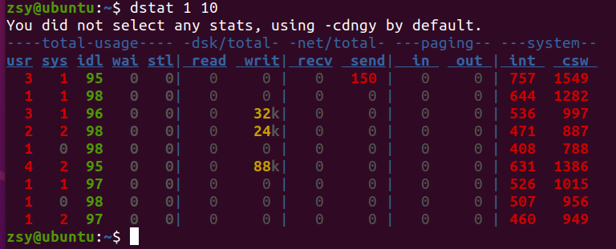
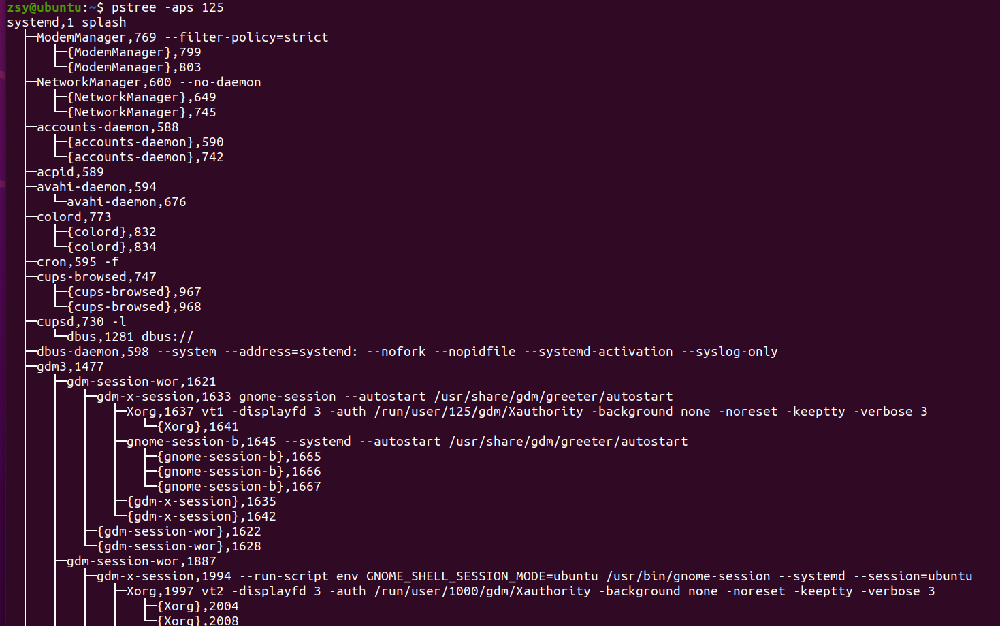

问题
通过分析 top 命令的输出，我们发现了两个问题：
- 第一，iowait 太高了，导致系统平均负载升高，并且已经达到了系统 CPU 的个数。
- 第二，僵尸进程在不断增多，看起来是应用程序没有正确清理子进程的资源。
iowait分析
- dstat可以同时查看 CPU 和 I/O 这两种资源的使用情况

- strace 正是最常用的跟踪进程系统调用的工具。
$ perf record -g
$ perf report
僵尸进程
找出父进程，然后在父进程里解决。
# -a 表示输出命令行选项
# p表PID
# s表示指定进程的父进程
$ pstree -aps 125

小结
iowait 高不一定代表 I/O 有性能瓶颈。当系统中只有 I/O 类型的进程在运行时，iowait 也会很高，但实际上，磁盘的读写远没有达到性能瓶颈的程度。
碰到 iowait 升高时，需要先用 dstat、pidstat 等工具，确认是不是磁盘 I/O 的问题，然后再找是哪些进程导致了 I/O。